先週、今週、週末の梅吉 [梅吉]
気持ちよ〜く晴れた先週の週末。
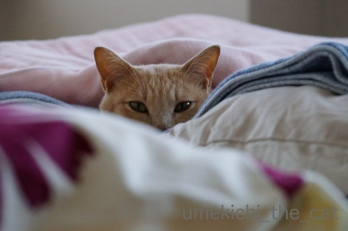
いつもはお布団でぐだぐだしていると叩き出すのですが
（下僕なんですがこのあたりは強気なんですよw)
ちょっと仏心を出して放っておいたならば・・・
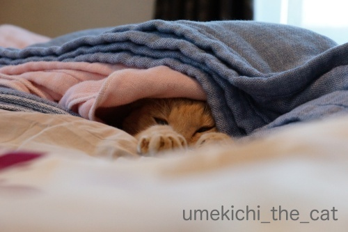
すっかりダメになった様子(^_^;)
うっかりケットをかけてあげたらこんな気持ちよさそうな事にw
これは朝６時ごろ。
ベッドメイクは諦めて好きなだけ寝るがいいわ、と思っていたら本当に起きてきません。
時々生存確認をしたりしてw
結局起きてきたのは夕方の４時くらい。その間飲まず食わず出さず。
お天気の悪い日や暑すぎる日はあまり活動せず寝ていることが多いですが
お天気が良くても寝てるんだな、と思った出来事でした。
「ごはんだよ」って起こさなければもっと寝ていたかも。
（起きた後はわーわー言ってご飯を要求し、もりもり食べて元気一杯走り回って
大変立派なものをお出しになりましたw）
人間も10代、20代前半の頃は12時間くらい寝てたという友人もいましたので
「寝子」の「ねこ」はほっといたらもっと寝るんでしょうねw
変わって今週末の梅吉。
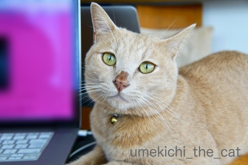
雨上がりだったせいでしょうか。梅雨時期でもないのにお鼻がにじにじw
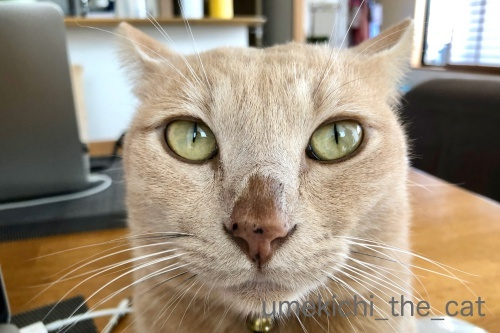
にじにじ過ぎますってばwww
このお鼻になるとなにをしてもおマヌケな感じになって笑えます ( ´艸｀)
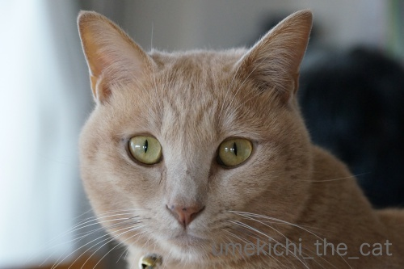
比較のためににじにじしてない梅吉を。
全然違う。。。
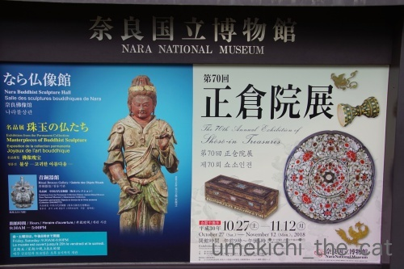
深まりつつある関西の秋の風物詩、正倉院展が始まりました！
初日の午前中は混雑してるんですが（ニュースで見ると）
午後からだと意外に空いているんですよ。
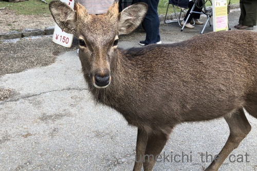
奈良に行ったら鹿さんへのご挨拶は欠かせません！
この子はチビツノが可愛かったです＾＾
今年の正倉院展の見所は（全部が見所なんですが）
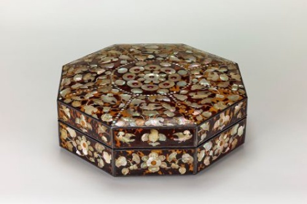
玳瑁螺鈿八角箱（たいまいらでん はっかくのはこ）
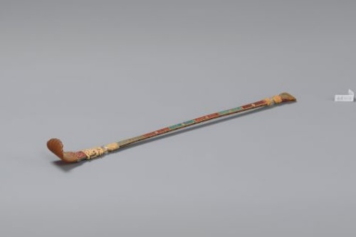
犀角如意（さいかくの にょい）
（いずれの画像も宮内庁 正倉院のHPからお借りしました。）
の二点でしょうか。
素晴らしいとしか言いようがありません。
（私の乏しい語彙では他に言いようがありませんwww）
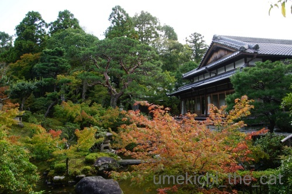
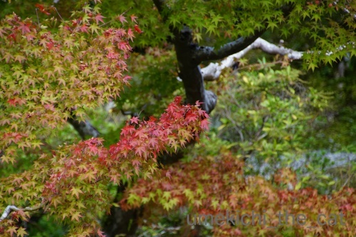
奈良公園周辺は紅葉が始まりつつありました。
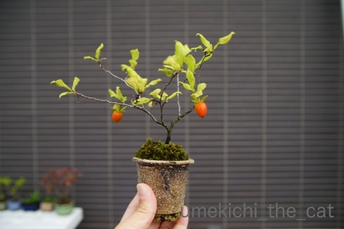
我が家のベランダにも秋の嬉しい色づきが！
花が咲かなかったり花は咲いても実になる前に落ちてしまったりと残念な事を繰り返し
苦節６年目にしてやっと柿の盆栽に実がなりました。
（実がなった状態で買ったので柿８年は当てはまらないかな。）
良い感じに色づいてます＾＾

カフェオレ色の梅吉

梅吉 2023年8月10日 永眠


梅吉と出会った譲渡会

犬猫の理由なき殺処分ゼロ
妄想広告
UMEKICHI 光

爆発的に早い！
時々攻撃的！
Thanks to Mr.Boss365
爆発的に早い！
時々攻撃的！
Thanks to Mr.Boss365

確かに、放置すると夕方まで寝てるかも？
その分、夜に暴れるような？＾＾；
by ぽちの輔 (2018-10-29 06:49)
すご～い寝てますねぇ～(;^_^A
生存確認に何度も見に行っちゃいますね♪
お鼻がニジニジ？
毛布に包まり保湿されたのでしょうか（笑
by きぃ (2018-10-29 07:48)
ケットをかけてもらってぬくぬく♪( ´▽｀)
幸せそうにこもって寝てますねぇ=(^.^)=
うちのはもふもふすぎるので、まだケットは暑いみたいです(⌒-⌒; )
鼻のニジニジ、早く落ち着きますように(_ _)
by ニッキー (2018-10-29 07:54)
元奈良県民ですが、奈良公園って
数えられる程度しか行ったことないです(^_^;)
柿の盆栽、お見事！！umekichi
by よーちゃん (2018-10-29 08:41)
梅吉さん、気持ち良さそうに包まっていますね。
優しいダメケットですね（笑）
ほのかに温かくて気持ちが丁度梅吉さん好みで良かったのでしょうね。
夕方まで寝ているとは、梅吉さんも若いです。
夫は若い頃、スキーから帰宅後、2日間寝てたことがあったそうです。
生存確認をしたくなる気持ち、とっても分かります。
お鼻ニジニジ（笑）コアラ梅さん。
正倉院展、関西に越してきたときに、毎年行こうと言いながら
長蛇の列に数回で諦めています（笑）
by kiki (2018-10-29 08:42)
おはようございます。
ニャンズはよく寝ますね。小生猫の場合「飲まず食わず」は無く、
食事時間には、規則正しく起きて要求します。
小生宅では、猫時計の時間と呼んでいます。
「お鼻がにじにじ」は不思議な現象ですね？何故なるの？
正倉院展？一度も見た事ないですが、螺鈿・細工・輝きが美しそうです。
実りある柿の盆栽？面白そうです！？(=^･ｪ･^=)
by Boss365 (2018-10-29 10:29)
梅吉さんご飯食べないで寝てるんだ~。あんまり気持ちよくてお布団出たくないのかな。
正倉院は正にお宝だらけなのですね。秋の奈良公園も良さそう。
柿の盆栽も可愛くって良い感じですが、食べられるのかどうか気になります。
by zombiekong (2018-10-29 12:09)
梅吉さん、気持ちよさそう(#^^#)
ウチのはどんなに眠くてもごはんの時間には必ず起きてきます。
眠そうな目を必死で開いて、しっかり食べてからまた寝ます^^;
私も学生時代にはいくらでも眠れましたが今はもう無理。
肩や腰が痛くて起きてしまいますよ(-_-;)
正倉院展行かれたのですね！螺鈿の美しい事♪
並ぶのが嫌でもう何年も足を向けていません・・・。
鹿の角切りが終わったところなのかな？？ 短い角、かわいいですね^^
by ゆきち (2018-10-29 12:33)
梅吉さん、イケメンだにゃあ^^
by ニコニコファイト (2018-10-29 14:11)
お鼻のにじにじ、早く治ると良いですね。
イケメンなのに・・・。
【柿の盆栽に実がなりました】
素敵です。
小さい頃から小さいものが好きで、
盆栽が、それもテノヒラサイズが
大好きなのです。超キュート！
by あとりえＳＡＫＡＮＡ (2018-10-29 14:24)
前回のお鼻にじにじの記事の後注意してうちのネコたちを見ていますが、未だ確認できず。なんでそうなるんでしょうね？きなこは鼻のピンクが濃くなったり薄くなったりはしますが・・・あ、ナノはず～～～～っと真っ黒のままですよ(*^^*)
by palpal (2018-10-29 14:42)
梅吉くん、ぬくぬく気持ちよくってとろけちゃいそうです(*^-^*)
こんな目で見つめられたら「いいよ。寝てなさい」って言っちゃう。
もしくは私もなだれ込む～。
うちもみんなよく寝ます。今も気持ちよさそうな寝息が聞こえます。
まりもが「ぷっ」っておならした(≧▽≦)
by emi (2018-10-29 15:42)
“ぐだぐた”しちゃう気持ち、よっくわかりますよ！
そこに引きずられず、ちゃきっ！と起きた、ちぃさん、偉いっ！！
でも夕方まで寝られるのは、凄いですね。
私なんて、年齢を重ねるほどに長時間睡眠ができなくなりました（悲）
お鼻にじにじは、寝すぎたから？ではないですよね(^_^;)
さいかくの にょい。孫の手に見えました。。。
まさか、靴ベラではあるまい（←なんてヒドイことを！）
柿の木の盆栽、めちゃくちゃ素敵です！！！ 刺さりました！
まさに、ミクロコスモス。
by morichan (2018-10-29 16:33)
梅吉さん、お鼻がにじにじになっちゃったのですね！
湿度が多かったのでしょうか？
正倉院展が行われてたのですね、歴史的なものを沢山見られましたね(^^)
by ma2ma2 (2018-10-29 17:28)
ぬくぬくの梅吉さん、ケットまでかけてもらって～満喫ですね＾＾
お鼻がにじにじ、ここまでって珍しいのでは？ なんか、可愛い‥
正倉院展は素晴らしいんでしょうね！
え、鹿さん、１５０円？！って一瞬‥＾＾；
by sana (2018-10-29 17:43)
寒くなると梅吉さんも布団にもぐりっぱなしなんですね。
幸せそうです(^_^)
柿の盆栽、素晴らしいですね！自分は食べる柿しかイメージ出来ませんでした(^_^;)
by kou (2018-10-29 19:03)
寝ている姿を見るのも癒されます。^^)
にじにじ、気になりますね。何があったのでしょうね。
そして、鹿さんのビームも気になる。。。^^;
by yes_hama (2018-10-29 21:06)
すべてはねこさまのために。
日頃、掃除機もなかなかかけられません・・・言い訳！？
にじにじ、かわいいなぁ〜
鹿さんの写真、最初、え？置物？・・・と思っちゃいました。
だって、耳から「￥150」の値札が・・・(｡-_-｡)
紅葉始めもいい感じですね。すてき。
by Ja-Kou66 (2018-10-31 00:49)
ぽちの輔さん＞
私も夜暴れるなと覚悟しましたが
お布団に入って来てぬくぬくねんねの続きでしたw
どんだけ寝るんだかwww
きぃさん＞
何度も見に行きました！
目も（私が手で）開いて見たりして( ´艸｀)
ちなみに白目でしたよw
お鼻にじにじはどうしてなるんでしょうねぇ・・・
元気すぎてお鼻の水分が溢れ出る感じ！？
ニッキーさん＞
まだ暑い？大御所様の被毛おそるべしですね！
ぜひもふもふして顔を埋めてみたいです！！
（ニッキーさんを差し置いてw）
お鼻のにじにじは一瞬のうちになって
あっという間に治るんです・・・
いったいどうしてこうなるのか、病気じゃないけど今度
獣医さんに聞いてみようかなぁと思ってます ( ´艸｀)
よーちゃん＞
そういうものなのかもしれませんねー。
札幌市民も羊ヶ丘展望台（クラーク博士の銅像のあるところ）
って行きませんwww
柿、やっとうまく実がなりました！
kikiさん＞
二日間も寝ていたとは凄すぎです！
覚醒して日にちを確認してびっくりしたでしょうね(⌒_⌒;
正倉院展、私たちは並ばずに入れましたよ。
見終わった後も全然並んでいなかったので
初日の午後はオススメです！
翌日の日曜も午後は待ち時間０とHPに掲載されていたので
会期はじめは狙い目かもです。
来年はぜひぜひ＾＾
Boss365さん＞
確かに！猫時計は正確ですよね！！
休みの日も平日と同じ時間に朝ごはん（５時に第一弾）を要求されますからw
お鼻にじにじは湿度が高めの時になるんですが
湿度が高いからといって必ずなる訳でもなく・・・
なる時もあっという間になっていつの間にか治っています。
私も何故？？？と不思議でなりません。
正倉院は収蔵品の管理のため一年に一度扉を開くのですが
そのタイミングで博物館に展示されます。
収蔵品は本当に素晴らしいものばかりです。
宮内庁の持ち物なので（正確には天皇家？）国宝指定はされてませんが
これこそ国の宝だな、と思っています。
他都市に巡回しないので関西在住者の特権だなと毎年足を運んでいます！
（ツアーが組まれて他都市から見に来る方もたくさんいます。）
zombiekongさん＞
以前はご飯＆おやつの時間には本当に正確で
寝むりこけていても必ず起きて食べていたのに・・・
この夏以降お昼ご飯に関しては起きてこない事が時々あります。
けっして具合が悪いとかじゃなく食欲よりも眠気が勝っている感じ。
梅吉もまたちょっと大人になったのかなって思ってます。
柿の実、気になりますよね！
たくさん実ってたら一つくらい実食して見たいところですが
2個じゃあ今年は鑑賞のみかなぁ・・・
渋柿っぽい気もするしwww
ゆきちさん＞
梅吉もちょっと前まではこてつくんと一緒
眠い目をしばしばさせながらよろよろ起きて来たんですが
最近お昼のおやつに限っては起きてこないことが時々あるのです。
湯たんぽを仕込んだあったかいベッドで
「たべたい」VS「ぬくぬく」葛藤しているかと想像すると笑っちゃいます( ´艸｀)
がぬくぬくを優先するなんて梅吉も大人になって来たのでしょうか・・・
正倉院展、会期が始まっての何日間は空いている様ですよ！
HPの待ち時間の表示０分が続いていました＾＾
ニコニコファイトさん＞
ありがとうございます！！
にじにじしててもイケメンとお褒めいただき嬉しいです(^_－)☆
あとりえSAKANAさん＞
にじにじ、お鼻の水分が上の方にどんどん広がって行くのですが・・・
湿度の高い時になるのは間違い無いのです。
が、だからと言って必ずなる訳でもなく一眠りしたら消えていたり・・・
謎が多い現象なのですがコアラみたいで可愛い！と
このお鼻になると飼い主は喜んでいます＾＾
小品盆栽はおっとの趣味なんですが
花が咲く、実がなる植物を基本に集めています！
暑くて寒い大阪は水の管理が難しいです(-_-メ)
palpalさん＞
にじにじ、梅吉の特殊能力（笑）として認定してもいいかもしれませんねw
ピンクのお鼻の濃淡はわかります！
初代猫がぬくぬくの時は濃いめ、寒い時は薄めになってました。
一緒かなぁ(≧▽≦)
emiさん＞
ぬくぬく梅吉、一緒になだれ込みたい気持ちを抑えましたw
「寝てていいよ」と思う反面「一人でぬくぬくしちゃってさ！」と
ちょっぴり悔しくて生存確認と合わせて時々わしゃわしゃしてやりました(*>艸<)
まりもくんのおならは「ぷっ」って音がするのねー！
私は梅吉のおならの音は聞いたことがないわ・・・
いつもすかされるのー！！
「ん？なんか、くさい？？」と確かめると梅吉なのよね0(≧▽≦)0
morichanさん＞
若い時は深く長く寝てられましたが最近は浅く短くなって来た私の睡眠。
朝の４時くらいから眼が覚めるのも時間の問題かもしれません (-_-メ)
梅吉が羨ましい！！
お鼻にじにじは必ずではないのですが湿度の高い日になります。
お鼻の元気水分が飽和状態になって上へ上へと上がって行く感じ・・・
コアラみたいで可愛いでしょ ( ´艸｀)
さいかくの にょい。聖武天皇は絶対背中かいてたと思います！
「ここの突起がええ感じや・・・」とか言いながらw
これぞ貴人の贅沢！？
柿の木盆栽、おっとが丹精したので枝ぶりもなかなかと思ってます！！
お誉めいただいてありがとうです＾＾
ma2ma2さん＞
湿度は高かったですが
秋にお鼻にじにじが見られるとは思ってませんでした0(≧▽≦)0
正倉院展は本当に見所満載なんですよ＾＾
sanaさん＞
ついこの前まで暑いって言ってたのに
あっという間にぬくぬくが心地よくなって来ましたよね＾＾
ぬくぬくに敏感な梅吉が見逃すわけもなく。。。
昨日からは湯たんぽも登場しましたよ。
お鼻にじにじは元気すぎてお鼻の水分が溢れ出ちゃってる感じでしょうか( ´艸｀)
いつの間にか消滅しちゃうのでなっている間は積極的に愛でてます！
鹿、コメントで気づきましたw
本当、150円！って鹿せんべいのお値段です(*>艸<)
kouさん＞
梅吉も人並みに（笑）猫なので暖かさには貪欲ですよー＾＾
夜はお風呂のフタの上がお気に入りですw
柿盆栽、こんなに小さくてもちゃんと実がなりました！
美味しいかな？渋柿かな？？
yes_hamaさん＞
しあわせそうな「ぷーすか」いびきを聞いているのも良いものでした＾＾
でも時々わしゃわしゃっと楽しませてももらいましたよ( ´艸｀)
にじにじは元気すぎてお鼻の水分が溢れ出ちゃってる感じでしょうか。
湿度の高い日になりがちなんですが必ずなる訳でもなく・・・
よくわからない現象ですが健康状態云々ではない様です。
鹿さんビーム、しかせんべいをご所望と思われますwww
Ja-Kou66さん＞
いえいえ、
我が家の衣替えがなかなか進まないのも猫様のせいですよねwww
鹿さんの150円問題（笑）コメントいただいて気づきました！
後ろにあった鹿せんべいワゴンの値札と見事に被ってました＾＾
この日は東南アジア系の団体さんがいて
さかんに鹿せんべいをお買い求めになってましたよ！
なので手ぶらの私たちは鹿さんにあまりお相手してもらえず(^_^;)
紅葉はこれから日1日と加速しそうです。
by ちぃ (2018-10-31 17:42)
あははは＾＾
飲まず食わず出さずで、爆睡し続けるとは、
さすが太っ腹な、なにわの梅吉さんですね！(*´ω｀*)♡
にじにじ、早く治るといいね(^_-)-☆
by マーヤ (2018-10-31 20:08)
なんとなくですが、先生は先生なりに気にされているように感じます。
っていうか、柿の木に関心が・・・> <
先生、お大事に！
by KENT0mg (2018-10-31 21:24)
マーヤさん＞
飲まず食わず出さず、体も痛くならず・・・
若いって良いわねぇぇぇぇぇーと羨ましく思ったのでしたw
にじにじ、今はすっかり治ってます。ちょっとつまらない・・・・・
KENT0mgさん＞
笑われてなんぼのなにわっ子もこういうことにはデリケートかもしれませんね！
盛大に笑った後ちゃんと「かわいい」も盛大に言っておきますねー＾＾
柿の木、良いでしょ。
小さくて可愛いんですよ。朝晩冷えるので濃いオレンジ色になってきました！！
by ちぃ (2018-11-03 07:26)